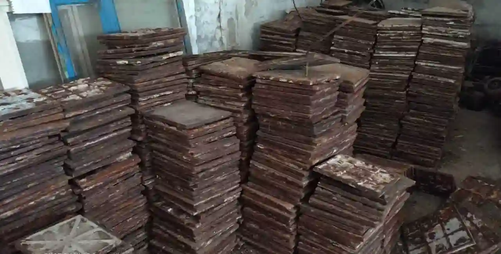

Чугун
Цена на чугун почти всегда была выше чем цена на сталь из-за его характеристик. Мы всегда готовы купить чугун по цене выше чем у конкурентов потому что имеем налаженный сбыт. Вторчермет работает на прямую с предприятиями занимающимися литьем изделий из чугуна (чушки, плитка чугунная).
Наша компания на постоянной основе осуществляет прием лома чугуна любого рода происхождения. Практически не важно в каком виде. Главное что бы объем был от 500 килограмм.
В отличие от оцинковки, чугун выгодно отличается литьевыми характеристиками и простотой в производстве. Большая масса при небольших объемах может значительно снизить транспортные расходы. А также то что чугун является достаточно хрупким материалом его не сложно расколоть, тем самым упростить перевозку и сложность демонтажа. Самым неудобным в большинстве случаев является лом станков т.к. состоит не только из чугуна, но и обычного черного металла. Чугунная плитка в свою очередь наиболее практичный вид лома. Она, как правило, вся одинакового химического состава и габаритного размера. Средней является чугунная труба, но её нужно только колоть.
Мы принимаем на лом:
- трубы чугунные
- батареи бытовые
- плитка
- станины станка
- ливневые решетки
Скупка и приём чугунного лома
Заработать сдавая чугунный лом –и пополнить свой бюджет средствами за короткое время. Вы хотите сдать чугунный лом? Вам надо узнать, где принимают чугун и по какой цене? В компании «Вторчермет», это элементарно осуществить! Увидите сами, мы осуществляем прием лома чугуна по рыночной стоимости за тонну в Харькове. Надо отметить, что на нашей базе реальная цена по сравнению с нашими конкурентами в городе. Поэтому мы советуем сдавать чугун на нашей площадке по объективной цене – у нас ценник выше чем у многих заготовителей. Просто оставьте заявку на сайте.
Не знаете какая точная цена сегодня?
Звоните и уточняйте!
По какой цене принимают чугун на лом
Важно! Самовывоз металлолома автотранспортом "Вторчермет" только от 500кг.! Из-за высокой нагрузки нашего транспорта, прием металлолома происходит по предварительному звонку, +38 (067) 812-75-86 либо оставляйте заявку. Цените наше и своё время. Благодарим за понимание.
Факторы влияющие на цену чугунного лома Прием лома чугуна проводится нашими сотрудниками на металлобазе. Основные показатели влияющие на стоимость чугуна: Группа (углеродистый или легированный); Марка металлолома (его свойства); Коррозия (очень ржавый лом, принимают с достаточно большим % засора); Сорт лома чугуна (высокопрочный, серый, белый и.т.п.); Виды чугуна (его габаритные размеры). Сдавайте металлолом дороже, если он хорошего качества не гнилой и в большом количестве. Высоко углеродистый чугун, используемый для литья и на производстве, ценится дороже. Перед тем как сдать уточните, сколько стоит сдать чугун на лом позвонив, или пришлите фото, описание, хим.анализ на viber или telegram.
Мы принимаем черный и цветной металл ежедневно с 9:00 до 19:00
Наша компания имеет полный пакет регистрационных документов
Бесплатный самовывоз металлолома от 0,5 тонны
Демонтируем чугунную плитку в Харькове
А так же чугунная труба. Даем хорошую цену с места
Засор от 3%
Вам помогут наши квалифицированные сотрудники Сомневаетесь в массе вашего металлолома? Отправьте нам несколько фотографий на телефон. Мы оценим и ответим вам как только это возможно.
Как сдать чугунный лом дороже?
Стоимость лома чугуна за 1 кг — Сдать дорого в Харькове
Что бы не прогадать при сдаче металлолома и получить максимальную прибыль. Ознакомьтесь с рекомендациями ниже:
Рассчитать ориентировочную прибыль от сдачи лома к нам на базу так же вам поможет калькулятор металлолома у нас на сайте. Сами снимите старые отопительные батареи, трубы, ванну и привезите на приемный пункт «Вторчермет». Подготовьте большую партию чугунного металлолома (более 500 кг.) – тогда мы сможем принять её и вывезти самостоятельно. Те у кого ломообразование стабильное и в большом количестве могут выдвигать свои условия, тем более если лом отличного качества. Предлагая крупную партию чугунного лома смело можете рассчитывать на хорошую цену, условия оплаты и доставки. Нельзя не сказать то, что приёмом лома чугуна занимаются многие перекупщики, они могут принять ваш металлолом в небольших объемах. С их помощью, возможно сдать даже одну батарею или ванну. Заявки на вывоз чугуна мы принимаем круглосуточно на сайте или с помощью мессенджеров. Наша компания работает по всей области, мы регулярно вывозим металлолом и чугун из таких районов: Чугуев, Дергачи, Красноград, Валки, Волчанск, Песочин, Мерефа. Наша площадка принимает разные виды чугуна. Разделяя его по химическому составу, качеству и количеству содержания черного лома.
Вот несколько видов чугунного лома:
17 А – промышленный лом. Габариты: длина до – 1500 мм, ширина до – 500 мм, высота до – 500 мм.
19 А – чугун, с содержанием фосфора. Размеры которого не превышают: 1500х500х500 мм.
20 А – негабаритный кусковой лом. Производственные отходы, масса которых не более 5000 килограмм.
22 А – негабаритный металлолом содержащий фосфор. Это чугунные производственные отходы, а так же трубы и батареи.
Организация «Вторчермет» принимает чугунный лом в любых объемах. Наша база берет металлолом у юридических и физ. лиц в Харькове и области. Сдавать лом чугуна нам – выгодно и несложно! Уникальные условия проверенным ломосдатчикам, работа по частичной либо полной предоплате!
Бесплатный вывоз габаритного кускового металлолома по Харькову от 10 тонн!